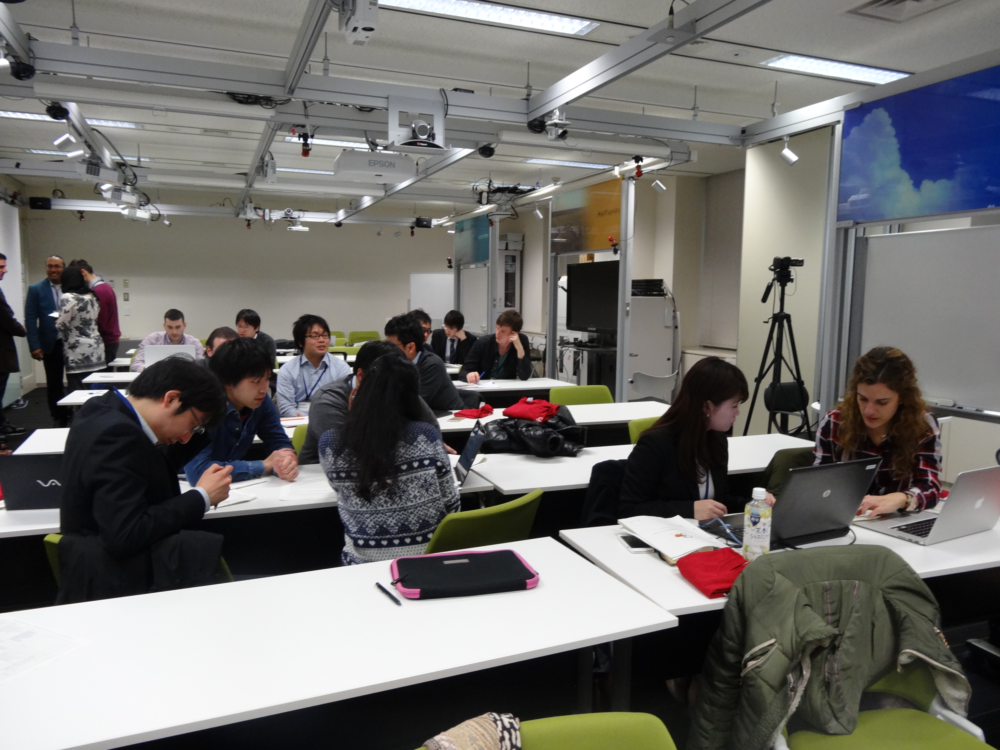
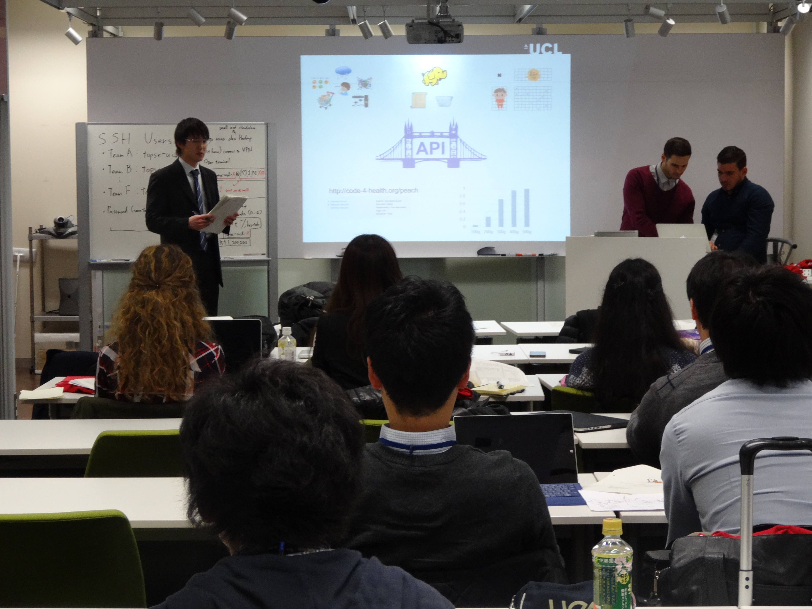
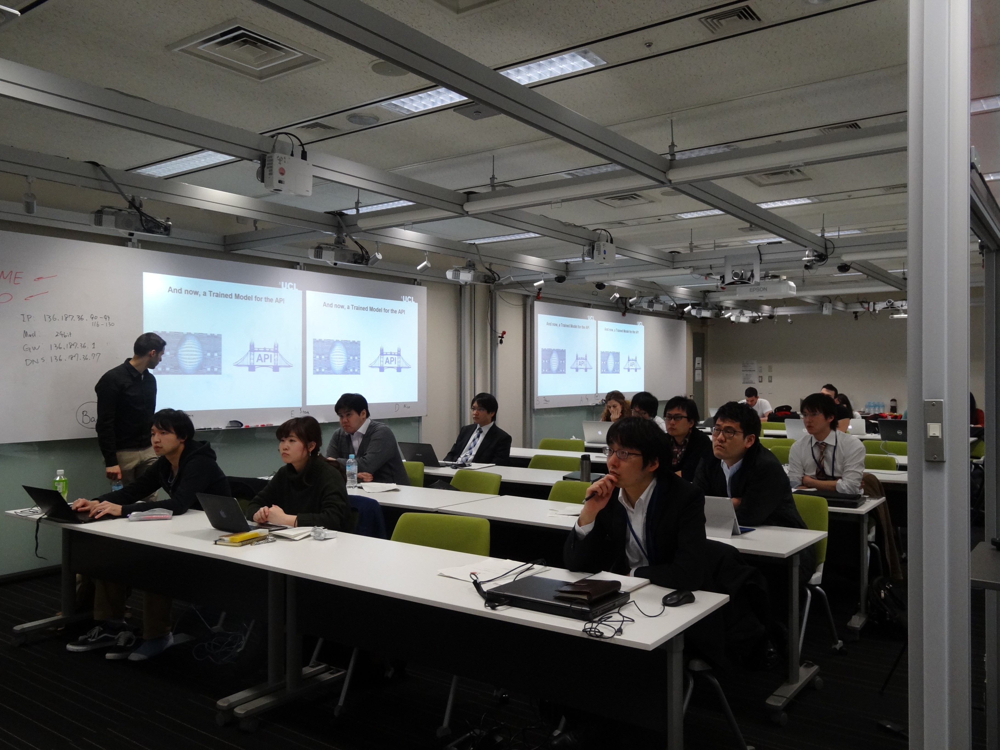

UCLとのPBL
トップエスイーでは，「国際的なプロジェクトで活躍できるスキルの養成」をめざし，2011年度より毎年，ロンドン大学 (University College London : UCL) との合同研修を実施してまいりました．
2015年度は2016年2月15日から19日の日程で、UCLから6人の修士学生、2人の博士課程の学生がアシスタントとして, そしてUCLのコンピュータサイエンス学部のDr.Dean先生とMDの奥様、トップエスイーの協賛企業から１０人の社員が参加して，ハッカソン形式で大量の保険データを分析するアプリケーションを開発する研修を国立情報学研究所で行いました。
第5回（2016年2月15〜19日）
  
第1回（2011年11月）
計算機科学・工学を学ぶUCLの大学院生数名を日本に招き，トップエスイー受講生等の希望者からなる数名の日本人技術者とチームを編成して5日間にわたって集中的にPBLを実施しました．
トップエスイーでは，英国の大学UCL (University College London)と共同でのPBL (project-based learning; プロジェクト実施形式の演習) を2011年度より実施することといたしました．計算機科学・工学を学ぶUCLの大学院生が，トップエスイー受講生等の日本人エンジニアとチームを編成して1つの課題に取り組むというものです．UCLのFaculty of Engineering Sciences学部長である Finkelstein教授の全面的な協力のもとで実現いたしました．
本年度は，UCLより1名の教員 (Dean Mohamedally博士)，5名の学生 (博士課程の学生1名，修士課程の学生4名) を招き，11月7日(月)より11月11日(金)までの5日間にわたって行われました(実施概要pdfファイル)．日本側の演習参加者は，トップエスイー受講生4名，協賛企業からの参加者2名，東京大学大学院修士課程の学生2名の計8名でした．演習の指導は，長久勝氏(2期生)をはじめとする，トップエスイー修了生が担当しました．
本年度PBLの題材は，「外部環境に合わせて定められたゴールまで自走する LEGO Mindstorm 制御プログラムの開発」といたしました．トップエスイーでは，ここ数年，社団法人組み込みシステム技術協会が主催するETロボコンへの参加を含む活動を行っており，今回の演習を指導する修了生たちも，この活動に参加しています．ETロボコンで使用される Mindstormロボットを制御するプログラムの作成が今回の演習のテーマです．
1週間の演習期間中，毎日午後3時から午後9時までが演習の時間にあてられました．全参加者13名はA, Bの2チームに分かれ，与えられたこの非常に短い時間で，要求獲得から実装までの一連の開発プロセスを遂行しました．今年は「異なる文化圏に属する開発者の協力によって，動作するプログラムを開発すること」に焦点を絞り，各開発プロセスの完成度はあまり重視しない方針でした．しかし，実際には，トップエスイーの受講生の今年度に学んだ要求獲得技術や設計技術の習熟度の高さと，UCL学生の新しい技術の吸収への意欲とがあいまって，期待以上に高いレベルで開発プロセスが進行しました．各プロセス終了時に行われた発表・討論会にはトップエスイー講師も加わり，熱い議論が展開されました．
日本側参加者は，演習開始前には一様にコミュニケーションについての不安を語っていましたが，どちらのチームも，役割分担も含め開発グループとしてよく機能していました．UCL側参加者の協力しようという姿勢に加え，日本側参加者の言語能力の問題を超えてプロセスを進行させようとする熱意が実を結んだものです．その日の開発作業が終わってUCLの学生たちが引き上げた後も，翌日のプロジェクト進行の方針について議論しつづける日本側参加者の姿が印象的でした．
最終日の走行会では，両チームとも見事に走行するロボットを披露してくれました．直後に行ったKPTによる振り返りでは，多方面からの改良案が提示され，次年度以降に向けてさらに良い演習が可能になると思っています．
なお，UCLの学生の滞在期間中，協賛企業である株式会社NTTデータ様，日本ユニシス株式会社様に会社見学をさせていただきました．お忙しい中，見学をアレンジくださいましたこと，また貴重な時間をお使いいただいて社内プロジェクトのご紹介や学生との討論に参加くださいましたことに感謝申し上げます．
UCLのウェブサイトにも本PBLの記事が掲載されております．
以下に，参加者からの感想の一部を抜粋します．
バックグラウンドの異なる人達との共同作業について，非常に多くの事を学ぶことができました．
また，やはり欧米の専門教育がかなり高度で実践的という事も実感することができました．一方で，参加されていた他の日本側のメンバーの方も皆さんレベルが高く，相手が学生さんとは言え十分に伍していけるという事も感じ，とても勇気付けられました．
国外の方と協同する機会は滅多に（個人的にはまったく）ないので，とても刺激になった．
日本人のメンバとUCLの学生とできちんと議論・合意し，開発を進めていくことができた．
UCLの学生はみなフレンドリーで，楽しくプロジェクトを進めることができた．
日本人同士が話すときにどうしても日本語で話してしまうことがあった．
英語を使用したプロジェクト開発を経験できたことは良かった．（いつの間にか日本人同士でも英語でコミュニケーションをとっていた）また，要求分析手法や設計手法，UMLなどが共通言語として非常に有効であることもわかった．
１週間という限られた時間を考えると，チーム内でプロジェクトマネージャ，リードプログラマ以外にもアーキテクトなど，個人に役割を明確に与えるべきであったかと思っています．本来は，チーム内で決定すべきというところかと思いますが，プロジェクト運営に関して考えが及ぶように，示唆，アドバイスがあった方がスムーズに作業を行えたように思います．
こちらの英語が拙いにも関わらず，UCLの学生は聞く姿勢がしっかりしていました．当初こちらは不安が大きかったのですが，この姿勢で安心しました．とてもありがたかったです．
ロボコンと言う題材は大部分の人にとって新鮮だったのと，ソフトウェア工学を実際に使うというのが良かったと思います．
英語のみを話す学生と短期間で議論する貴重な機会でした．十分な時間は無かったですが，ソフトウェア工学による一通りの開発を学べたように思います．ロボコンに精通されているスタッフの皆様のサポートが心強かったです．
定期的に発表（要求分析，設計，コーディング）を設けていたことによって，マイルストンチームで設けることが出来，進めやすかったと思います．
メンターがいたことによって，作業が進めやすかったと思います．